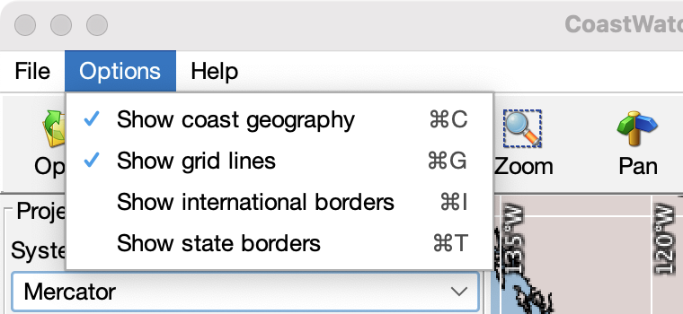

CoastWatch Master Tool Help: Geographic overlays
A number of geographic overlays are available to annotate the
master view and help in defining the master projection and region
parameters:
- Coast geography
- Land/water boundaries from the Global Self-consistent
Hierarchical High-resolution Shorelines (GSHHS) database:
http://www.ngdc.noaa.gov/mgg/shorelines/gshhs.html.
- Grid lines
- Latitude and longitude grid lines. Grid increments are
determined automatically from the master region extents.
- International borders
- International political border lines from CIA WDB-II data.
- State borders
- National state border lines from CIA WDB-II data.

Use the Options menu shown above to
select/deselect the desired geographic overlays. By default,
only the coast geography and grid lines are selected.
← Back to overview